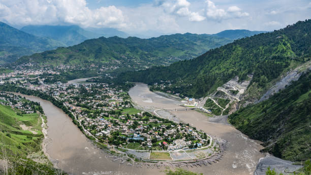
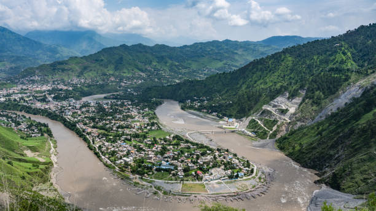

Muzaffarabad, the capital city of Azad Kashmir, is a destination that often gets overshadowed by the region's more famous natural wonders. However, this city has its unique charm and attractions that make it a must-visit for travelers exploring the region. In this blog, we'll take you on a journey through Muzaffarabad, shedding light on its history, culture, and the captivating experiences it offers.
Begin your exploration of Muzaffarabad with a visit to the iconic Red Fort. Built during the Chak dynasty in the 16th century, this fort offers a glimpse into the rich history of the region. The imposing red sandstone structure is a testament to the architectural prowess of the era.
A prominent landmark in the city, Chattar Muzaffarabad is a circular, tree-lined park with a beautiful marble monument at its center. It's a popular spot for both locals and tourists to relax and take in the view of the surrounding mountains
 

Leepa Valley is located in the Azad Kashmir region of Pakistan, accessible primarily from the city of Muzaffarabad. From Muzaffarabad, you can embark on a scenic drive to Leepa, which is approximately 71 miles (115 kilometers) away. The journey itself is an adventure, as you wind your way through lush forests, alongside gushing rivers, and into the heart of the Himalayas.
The first thing that strikes you when you arrive in Leepa Valley is the vibrant greenery that blankets the landscape. The valley is dotted with terraced fields, orchards, and meadows that burst into a riot of colors during the spring and summer months.
Leepa Valley is home to several charming villages, each with its unique character. Leepa, Leepa Lohar, and Leepa Dhundgali are some of the villages you can explore, offering you a glimpse into the local way of life.
The valley is adorned with crystal-clear streams, gushing waterfalls, and serene rivers that provide a soothing backdrop to your exploration. The Leepa River itself meanders through the valley, creating delightful scenery at every turn.
Nestled in the heart of Azad Kashmir, Pakistan, Rawalakot is often referred to as the "Pearl Valley" due to its breathtaking natural beauty. This charming town is a hidden gem for travelers seeking a peaceful escape amidst the pristine landscapes, lush forests, and serene lakes. If you're an adventurer, nature enthusiast, or simply someone in search of tranquility, Rawalakot has something special in store for you. In this blog, we will explore the wonders of Rawalakot, taking you on a journey through its stunning landscapes, rich culture, and the warm hospitality of its people.
Banjosa Lake is one of Rawalakot's most captivating attractions. Surrounded by pine forests and hills, this artificial lake offers a picturesque setting for boating, picnicking, and leisurely walks. The calm waters and the cool breeze make it an ideal place to unwind and appreciate nature's beauty.
Rawalakot is renowned for its vibrant flower gardens, such as the Pahalgam and Banjosa Gardens. These beautiful gardens are a testament to the town's rich flora and fauna and offer a refreshing and rejuvenating experience.


Poonch is a well-kept secret for travelers seeking adventure, natural beauty, and a taste of rich culture. This quaint town, with its lush green valleys, majestic mountains, and a historical charm, promises an unforgettable experience for those who venture to explore it. In this blog, we will take you on a journey to discover the wonders of Poonch, Azad Kashmir, offering a glimpse of its captivating beauty, cultural heritage, and the warmth of its people.
Toli Pir is a striking hilltop, accessible via a picturesque trek through lush green forests. Upon reaching the summit, you'll be rewarded with breathtaking panoramic views of the valleys and hills that surround Poonch, making it a must-visit spot for trekkers and photographers.
Poonch River, meandering through the heart of the town, adds to the natural beauty of the region. You can enjoy a leisurely walk by its banks, have a picnic, or even try your hand at fishing.
Tucked away in the picturesque region of Azad Jammu and Kashmir, Pakistan, Neelum Valley is a pristine gem that offers travelers a unique blend of natural beauty, serenity, and rich cultural experiences. Nestled between lush green hills, this valley is a sanctuary for adventure enthusiasts, nature lovers, and those in search of tranquility. In this comprehensive travel guide, we'll embark on a journey to explore Neelum Valley, unveiling its breathtaking landscapes, cultural heritage, and travel tips to help you plan an unforgettable trip.
Shounter Lake, a shimmering turquoise gem hidden in the upper Neelum Valley, is a tranquil escape from the chaos of urban life. Surrounded by pristine forests and framed by majestic peaks, the lake is perfect for boating, picnicking, and absorbing the serene atmosphere.
Keran, a charming village in Neelum Valley, offers stunning views of the Neelum River and the Indian-held territory across it. The soothing sound of the river and the lush green landscapes make Keran a perfect place for relaxation.

Tucked away in the enchanting Neelum Valley of Azad Kashmir, Pakistan, the Sharada Temple stands as a testament to a bygone era of rich culture and spirituality. This ancient temple, dedicated to the goddess Sharada, is not only a place of worship but also a site of historical significance, attracting travelers from all corners of the globe. In this blog, we'll take you on a sacred journey to explore the Sharada Temple, offering insights into its historical importance, architectural grandeur, and the spiritual experiences it offers to all who visit.
Located near the pristine Neelum River, the temple offers stunning views of the lush greenery and the river's crystal-clear waters. The picturesque backdrop adds to the temple's charm.
Sharada Temple holds immense historical and cultural significance for the people of the Kashmir Valley. The temple, dedicated to the goddess of knowledge, Sharada, has deep roots in the region's history and has been a place of reverence for centuries.